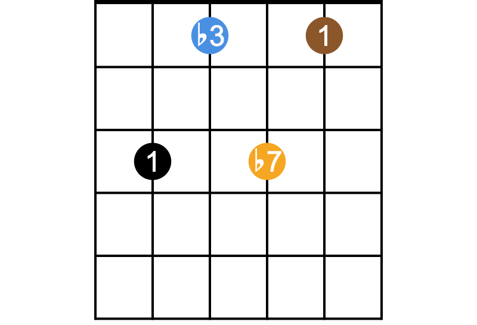

CAGED System for Guitar
Table of Contents

1 Chords
1.1 The CAGED rule
As long as the root has the right position, you can use either of the five CAGED patterns
to play chord at any position on the fret you want!
1.2 Major Triad chords
1.3 Major 7th chords

1.4 Dominant 7th chords
1.5 Minor Triad chords
1.6 Minor 7th chords

1.7 Usage
- All rows are sorted as
CAGEDorder. - Black: The lowest root.
- Brown: The 1st (root).
- Blue: The 3rd (flat).
- Green: The 5th (flat).
- Orange: The 7th (flat).
- Grey: May be Omitted.
(dim, aug, sus, add) chords are not included currently… You can infer them though.